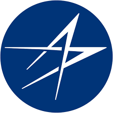
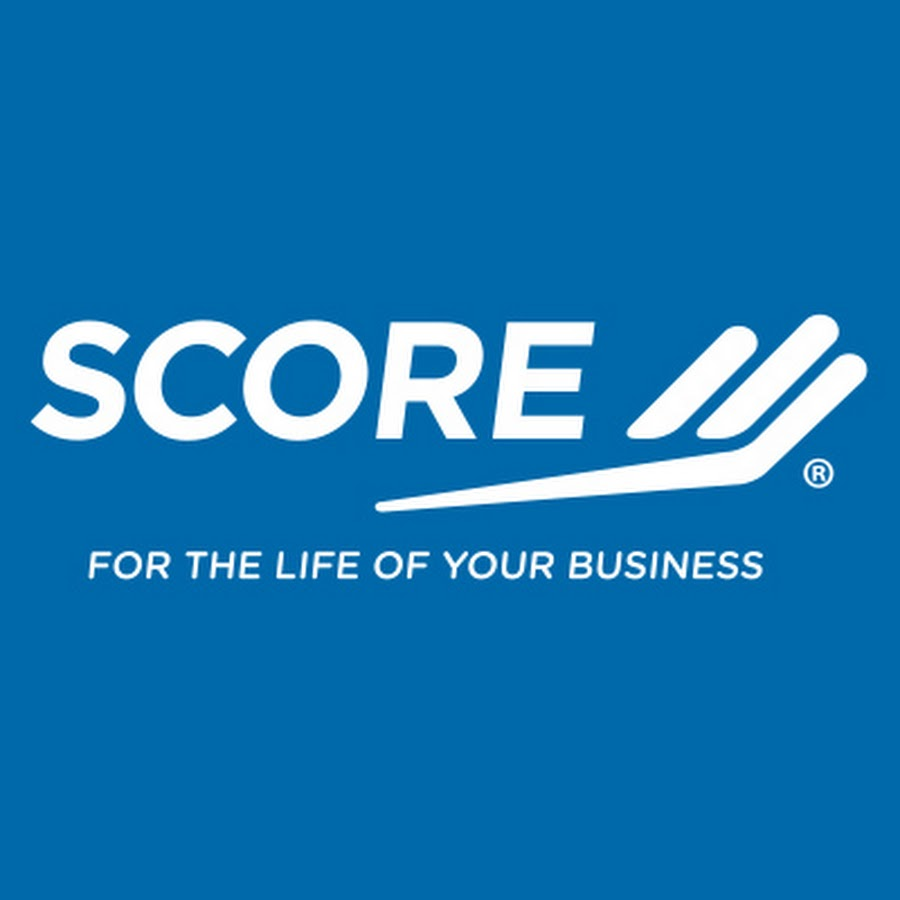
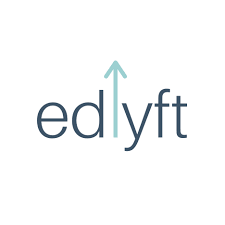

Work Experience

Capital One
Software Engineering Intern
- Developing an AWS Fargate application to effectively detect credit card fraud transactions and integrate data into a PostgreSQL database while leveraging Java, Spring Boot Kafka, Mockito, and Maven build automation.
- Incorporating application into production environment through a Jenkins pipeline, while implementing automated CI/CD processes to facilitate efficient integration, testing, and deployment.

Lockheed Martin
Software Engineering Intern
- Constructed a live analytical dashboard via ELK stack, with Kibana and Vega employed for creating custom visualizations. Processed DIS simulation data through Elasticsearch and Logstash, providing comprehensive real-time insights for military
- Developed an ActiveMQ listener Python script incorporating the STOMP.py library and Apache ActiveMQ Artemis to transform DIS packets from Lockheed simulations into JSON format compatible with

Score Association
Data Analytics Consultant
- Conducted in-depth analysis of Facebook and Google Business engagement trends for Score Association's 256 offices, employing OLS regression models with Pandas, Statsmodel, and Scikit-learn
- Utilized Natural Language Processing and Sentiment Analysis techniques on Score's dataset of over 100,000 observations using NumPy, Matplotlib, NLTK, and Seaborn to optimize post retention, resulting in regional and national recommendations for up to 14% improved

Edlyft
Computer Science Intern
- Mentored 140 undergraduate students in advanced Java Object Oriented Programming, achieving a 23% average grade improvement last semester